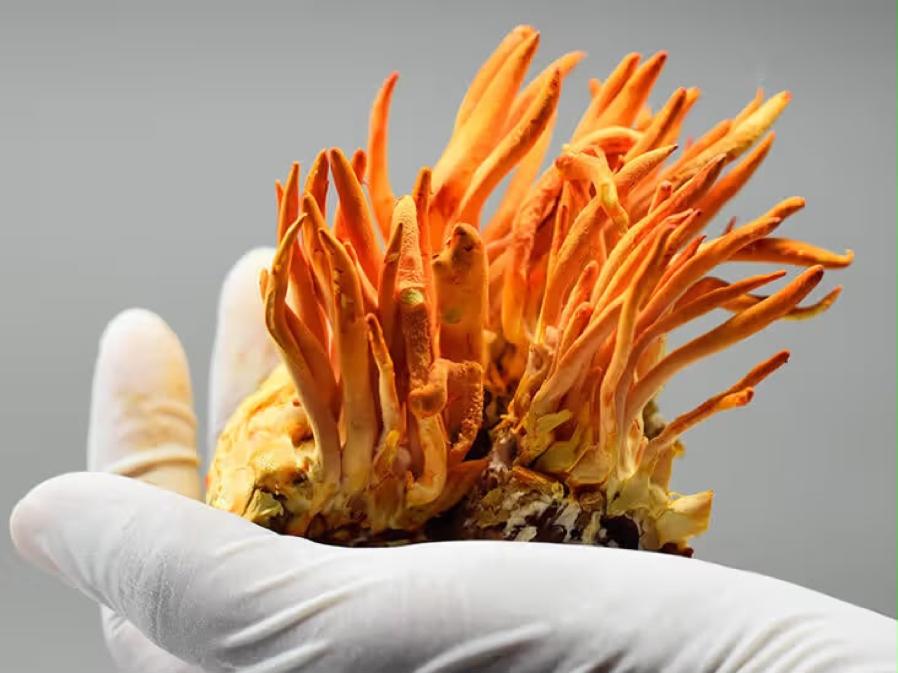

What cordycepin actually is
Cordycepin is 3′-deoxyadenosine, a nucleoside that looks almost exactly like adenosine with one hydroxyl group missing. That single structural difference is why it is of interest.
The commercially important point for a formulator is that Cordyceps militaris — the orange, cultivated species — produces cordycepin in its fruiting body, and can be grown to a specification. Ophiocordyceps sinensis, the wild Himalayan species, is harder to source, and harder to confirm the identity of. If your label claim depends on cordycepin, C. militaris is the species that lets you stand behind the number.
Content is not fixed. It varies with strain, substrate, growing conditions and harvest timing, which is why a single headline figure means less than a result measured on the batch in front of you.
What to ask for: cordycepin as % w/w, assayed by HPLC, on the specific batch you are buying. Adenosine reported alongside it. Anything expressed only as “polysaccharides” or “beta-glucans” is measuring something else entirely. Useful, but not cordycepin.

The number that matters is the one on your batch,Farmologic
not the one in the brochure.